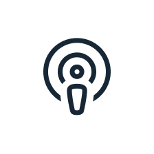

Was tun ohne Zigarette?
Folge 24
45 min
Bist Du ein typischer Stress-Raucher? Bei Ärger, Wut und Stress bringt Dich die Zigarette wieder auf den Boden und entspannt Dich? Erfahre in diesem Podcast, was hinter dem Zusammenhang von Rauchen und Stress steckt und wie Du Dich davon lösen kannst. Vielleicht weißt Du nicht, wie Du stressige Situationen ohne die Zigarette schaffen sollst. Im Podcast mit Frau Pöltl-Knüppel, selbst ehemalige Raucherin und mittlerweile langjährige Suchtberaterin, bekommst Du viele Tipps, wie der Weg in ein rauchfreies Leben funktionieren kann. Auch Du kannst es schaffen!
In Stresssituationen wird oft zur Zigarette gegriffen, da das darin enthaltene Nikotin der Tabakpflanze eine beruhigende Wirkung haben kann. Dennoch ist Rauchen ungesund und sollte auch in solchen Situationen vermieden und lieber durch gesunde Alternativen ersetzt werden. Gerade vor dem Rauchstopp ist es deswegen sehr wichtig, sich andere Möglichkeiten zu suchen, wie man sich bei Stress oder anderen Gefühlen ablenken kann. Dies gehört zur Verhaltenstherapie und ist ein wichtiger Schritt, um Nichtraucher*in zu werden.
Zusammenhänge von Rauchen und Stress
Erkenntnisse aus der Hirnforschung können zu dem Thema einige
Zusammenhänge erklären. Das hat unter anderem etwas mit den
Botenstoffen in unserem Gehirn zu tun. Denn Nikotin ist ein
psychotroper Stoff, den die Tabakpflanze in der Wurzel bildet. Dies
dient ihr zur Schädlingsbekämpfung. Diese psychotrope Substanz
landet dann durch das Rauchen in unserem Gehirn. Beim Stress muss
man ebenfalls das Gehirn betrachten: Wenn man Stress empfindet,
werden bestimmte Botenstoffe in unserem Gehirn ausgeschüttet wie
z.B. das Adrenalin. Das ist natürlich gut, um in der Natur überleben
zu können. Ein Beispiel: Wenn ein Säbeltiger um die Ecke kommt, wird
direkt Adrenalin ausgeschüttet - dieses macht wach und aufmerksam.
Jetzt können wir kämpfen oder flüchten. Diese Reaktionsmuster
brauchen wir in der heutigen Zeit aber nicht mehr.Wenn Stress
auftritt, werden wir nicht flüchten oder kämpfen, sondern möchten
uns wieder beruhigen und entspannen. Dafür braucht unser Gehirn
einen Gegenspieler wie das Serotonin. Damit zurück zum Nikotin:
Diese psychotrope Substanz, die wir aus der Tabakpflanze rauchen
bewirktdass der Stoff Serotonin vermehrt ausgeschüttet wird und uns
damit beruhigt. Das bedeutet: In Sekundenschnelle erleben wir bei
Stress und Rauchen eine wohltuende Beruhigung, die entspannt und
einen runterkommen lässt.
Ohne Zigarette auskommen
Das Nichtrauchen in stressigen Situationen muss erst wieder neu
gelernt werden. Dazu werden im ersten Schritt alle typischen
Rauchsituationen in der sogenannten Selbstbeobachtung
aufgeschrieben. Im zweiten Schritt werden Strategien entwickelt, um
die Zigarette mit einer gesunden Alternative zu ersetzen. Diese
Alternativen sind für jeden Individuell. Ein Beispiel: Ein Raucher
empfindet es als hilfreich, bei Stress auf die Terrasse zu gehen,
eine zu rauchen und sich damit zu beruhigen. Die neue Strategie: Die
Situation direktverlassen, aber anstatt auf die Terrasse zu gehen,
geht es mit dem Hund eine Runde Gassi. Das Beispiel zeigt, dass
Stress und Rauchen zusammenhängen. Deshalb muss bewusst nach
Alternativen gesucht werden. Die Zigarette hat keine zauberhafte
Wirkung bei Stress, sondern es geht darum, sich andere
Verhaltensweisen anzutrainieren und das Stresslevel wieder
abzubauen.
Nicht nur Stress kann zum Rauchen führen
Bei der Analyse der Situationen in welchen geraucht wird, werden
auch Situationen ohne Stress beachtet. Für jede Situation muss eine
passende Alternative gefunden werden. Außerdem sollen die Raucher
sollen lernen: Ich habe Einfluss auf mein Handeln. Auch andere
Gefühle wie Ärger, Wut oder auch Glück müssen beachtet werden.
Extremsituationen bewusst abwarten
Falls das Gefühl aufkommt, rauchen zu wollen, gibt es für sogenannte
Extremsituationen eine kleine Abhilfe. Nach ungefähr 20 Minuten
erreicht dieses Gefühl den Höhepunkt, heißt danach ist das Verlangen
größtenteils weg. In diesen 20 Minuten soll man sich ganz bewusst
fragen: Wenn ich jetzt rauche, was ist dann? Oft bleibt es nicht bei
dieser einen Zigarette, sondern die zweite folgt schnell. Diese
Rückfälle sollen bewusst gemieden werden. Indem man z.B. gar keine
Zigaretten mehr Zuhause hat und im Idealfall erst 15-20 Minuten zur
nächsten Tankstelle laufen muss. Bis dahin sollte der Höhepunkt
überwunden sein. Denn nicht die erste Zigarette nach dem Rauchstopp
macht Dich wieder zum Raucher, sondern die zweite. Ablenkung und
Abwarten spielen eine große Rolle.
Erfahrungsgemäß werden Rückfälle weniger, sobald sich die neuen Gewohnheiten etabliert haben. Hierbei muss man vertrauen, dass sich dies mit der Zeit einrichtet.
Rauchen im Allgemeinen verbieten?
Ein allgemein schwieriges Thema, da Verbote oft nicht zu dem
gewünschten Erfolg führen. Statt eines Verbots wäre es also
angebrachter, für eine bessere Aufklärung zu sorgen. Die Betroffenen
sollen Unterstützung erhalten, um endlich Nichtraucher zu werden.
Also Prävention und Hilfe statt Verboten.
Weiterlesen

Was tun ohne Zigarette?
Rauchen und Stress -
Was tun ohne Zigarette?
Rauchen und Stress -
Was tun ohne Zigarette?